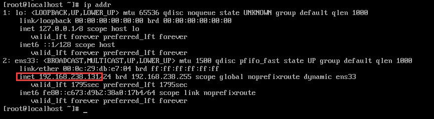
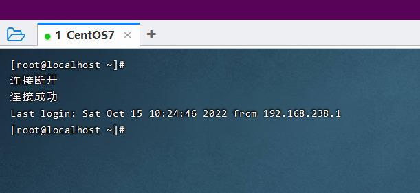
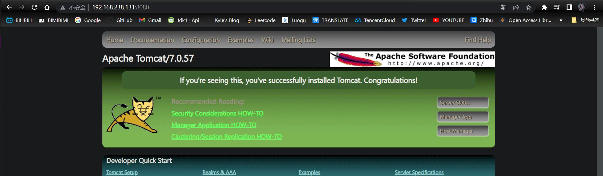

Linux安装
关于安装这里就不过多介绍了，安装版本是CentOS 7，选择最小安装即可
网卡配置
由于启动服务器的时候未加载网卡，所以这里我们要手动修改一下配置文件
- 进入到对应的目录
BASH
cd /etc/sysconfig/network-scripts- 编辑
ifcfg-ens33文件
BASH
vi ifcfg-ens33- 输入
i进入编辑 - 修改
ONBOOT=yes - 按ESC
- 输入
:wq保存并退出 - 输入
ip addr，查看到类似下图的ip地址即可

安装SSH连接工具
- 为啥要安装这个呢？
- 因为实际工作的时候，Linux操作系统都是安装在物理机上，而不是像我们现在使用的虚拟机
- 所以我们需要SSH连接工具，远程连接到物理机上
- 这里安装的是
FinalShell，具体的安装与连接操作，这里就不过多叙述了 - 成功连接之后的效果如图

Linux的目录结构
| 目录 | 含义 |
|---|---|
| /bin | 存放二进制可执行文件 |
| /boot | 存放系统引导时使用的各种文件 |
| /dev | 存放设备文件 |
| /etc | 存放系统配置文件 |
| /home | 存放系统用户的文件 |
| /lib | 存放程序运行所需的共享库和内核模块 |
| /opt | 额外安装的可选应用程序包所放置的位置 |
| /root | 超级用户目录 |
| /sbin | 存放二进制可执行文件，只有root用户才能访问 |
| /tmp | 存放临时文件 |
| /usr | 存放系统应用程序 |
| /var | 存放运行时需要改变数据的文件，例如日志文件 |
Linux常用命令
Linux命令常用技巧
- Tab键自动补全
- 连续按两次Tab键，给出操作提示
- 使用上下箭头快速调出曾经使用过的命令
- 使用Clear命令或者快捷键Ctrl+L实现清屏
Linux命令格式
- Linux命令格式如下
BASH
command [-options] [parameter]说明：
command：命令名[-options]：选项，可用来对命令进行控制，也可以省略[parameter]：传给命令的参数，可以是0个，1个或多个
注意：
[]代表可选命令名- 选项，参数之间需要用空格进行分隔
文件目录操作命令
ls
- 作用：显示指定目录下的内容
- 语法：
ls [-al] [dir]
说明：
-a：显示所有文件及目录（以.开头的隐藏文件也会列出）-l：除文件名外，还会讲文件的形态、权限、拥有者、文件大小等详细信息列出
注意：由于我们使用ls命令时，经常会加上-l选项，所以Linux很人性化的为我们提供了ll命令来作为ls -l命令的简写，使用ll -a也可以替代ls -al
cd
- 作用：用户切换当前工作目录，即进入指定目录
- 语法
cd [dirName]
说明：
~表示用户的home目录.表示当前所在的目录..表示当前位置的上级目录
cat
- 作用：用于显示文件内容
- 语法：
cat [-n] fileName
说明：
-n：由1开始对所有输出的行数编号
举例：
cat /etc/profile
- 查看`/etc`目录下的`profile`文件内容，显示行号- 查看`/etc`目录下的`profile`文件内容 - ``` cat -n /etc/profile
more
- 作用：以分页的形式显示文件内容
- 语法：
more fileName
说明：
- 回车键：向下滚动一行
- 空格键：向下滚动一屏
- b：返回上一屏
- q或者Ctrl+C：退出more
举例：
more /etc/profile
- 显示`/etc`目录下的`profile`文件末尾10行的内容- 以分页方式显示`/etc`目录下的`profile`文件内容 #### tail - 作用：查看文件末尾的内容 - 语法：`tail [-f] fileName` 说明： - `-f`：动态读取文件末尾内容并显示，通常用于日志文件的内容输出 举例： - ``` tail /etc/profiletail -20 /etc/profile
- 动态读取`/kyle`目录下的`blog.log`文件末尾内容并显示- 显示`/etc`目录下的`profile`文件末尾20行的内容 - ``` tail -f /kyle/blog.log
mkdir
- 作用：创建目录
- 语法：
mkdir[-p] dirName
说明：
-p：确保目录名称存在，不存在的就创建一个。通过此选项，可以实现多层目录同时创建
举例：
mkdir linuxCast
- 在工作目录下的linuxCast目录中建立一个名为test的子目录，若linuxCast目录不存在，则建立一个- 在当前目录下，建立一个名为linuxCast的子目录 - ``` mkdir-p linuxCast/test
rmdir
- 作用：删除空目录
- 语法：
rmdir [-p] dirName
说明：
-p：当子目录被删除后使父目录为空目录的话，则一并删除
举例：
rmdir linuxCast删除名为linuxCast的空目录rmdir -p linuxCast/test删除linuxCast目录中名为test的子目录，若test目录删除后linuxCast目录变为空目录，则也被删除rmdir linuxCast*删除名称以linuxCast开始的空目录
rm
- 作用：删除文件或者目录
- 语法：
rm [-rf] name
说明：
-r：将目录及目录中所有文件（目录）逐一删除，即递归删除-f：无需确认，直接删除name：要删除的文件/目录，支持通配符
拷贝移动命令
cp
作用：用于复制文件或目录
语法：cp [-r] source dest
说明：
-r：如果复制的是目录需要使用此选项，此时将复制该目录下所有的子目录和文件source：要复制的资源（文件/目录）dest：要移动到的位置
举例：
cp hello.txt linuxCast/
- 将hello.txt复制到当前目录，并改名为hi.txt- 将hello.txt复制到linuxCast目录中 - ``` cp hello.txt ./ hi.txtc
p -r linuxCast/ ./blog/- 将linuxCast目录和目录下所有文件复制到blog目录下
cp -r linuxCast/* ./blog/
- 将hello.txt改名为hi.txt- 将linuxCast目录下所有文件复制blog目录下 #### mv 作用：为文件或目录改名、或将文件或目录移动到其它位置 语法：mv source dest 说明： - `source`：要移动的资源（文件/目录） - `dest`：要移动到的位置 举例： - ``` mv hello.txt hi.txtmv hi.txt blogl
- 将hi.txt移动到blog目录中，并改名为hello.txt- 将文件hi.txt移动到blog目录中 - ``` mv hi.txt blog/hello.txtmv linuxCast/ blogl
- 如果blog目录存在，将linuxCast目录移动到blog目录中- 如果blog目录不存在，将linuxCast目录改名为blog - ``` mv linuxCast/ blogl
打包压缩命令
tar
作用：对文件进行打包、解包、压缩、解压
语法：tar [-zcxvf] fileName [files]
包文件后缀为.tar表示只是完成了打包，并没有压缩
包文件后缀为.tar.gz表示打包的同时还进行了压缩，也可以用.tgz作为简写
说明：
-z： 代表的是gzip，通过gzip命令处理文件，gzip可以对文件压缩或者解压-c： 代表的是create，即创建新的包文件-x： 代表的是extract，实现从包文件中还原文件-v： 代表的是verbose，显示命令的执行过程-f： 代表的是file，用于指定包文件的名称c和x是互斥的，解压和压缩不能同时进行
举例 ：
tar -cvf hello.tar ./*
- 将当前目录下所有文件打包并压缩，打包后的文件名为hello.tar.gz- 将当前目录下所有文件打包，打包后的文件名为hello.tar - ``` tar -czvf hello.tar.gz ./*tar -zxvf hello.tar.gz
- 在所有文件夹下查找helloworld.log文件- 将`hello.tar.gz`中的文件解压缩 ### 文本编辑命令 #### vi 作用：`vi`命令是`Linux`系统提供的一个文本编辑工具，可以对文件内容进行编辑，类似于`windows`中的记事本 语法：`vi fileName` 说明： 1. `vim`是从`vi`发展来的一个功能更加强大的文本编辑工具，在编辑文件时可以对文本内容进行着色，方便我们对文件进行编辑处理，所以实际工作中`vim`更加常用。 2. 要使用`vim`命令，需要我们自己完成安装。可以使用下面的命令来完成安装：`yum install vim` #### vim 作用：对文件内容进行编辑，vim其实就是一个文本编辑器 语法：`vim fileName` 说明： 1. 在使用vim命令编辑文件时，如果指定的文件存在则直接打开此文件。如果指定的文件不存在则新建文件。 2. vim在进行文本编辑时共分为三种模式，分别是`命令模式`（Command mode），`插入模式`（Insert mode）和`底行模式`（Last line mode）。这三种模式之间可以相互切换。我们在使用vim时一定要注意我们当前所处的是哪种模式。 针对vim中的三种模式说明如下： 1. 命令模式 命令模式下可以查看文件内容、移动光标（上下左右箭头、`gg`(开头)、`G`（末尾）） 通过vim命令打开文件后，默认进入命令模式 另外两种模式需要首先进入命令模式，才能进入彼此 2. 插入模式 插入模式下可以对文件内容进行编辑 在命令模式下按下[i,a,o]任意一个，可以进入插入模式。进入插入模式后，下方会出现`INSERT`字样 在插入模式下按下ESC键，回到命令模式 3. 底行模式 底行模式下可以通过命令对文件内容进行查找、显示行号、退出等操作 在命令模式下按下[:,/]任意一个，可以进入底行模式 通过 `/` 方式进入底行模式后，可以对文件内容进行查找 通过 `:` 方式进入底行模式后，可以输入`wq`（保存并退出）、`q！`（不保存退出）、`set nu`（显示行号） ### 查找命令 #### find 作用：在指定目录下查找文件 语法：`find dirName -option fileName` 说明： - `dirName`：指定目录 - `-option`：一般指定`-name`（根据文件名称来查找） - `fileName`：可以使用通配符的方式 举例： - ``` find / -name helloworld.logfind . -name "*.java"
- 在/linuxCast目录及其子目录下查找.java结尾的文件- 在当前目录及其子目录下查找.java结尾文件 - ``` find /linuxCast -name "*.java"
grep
作用：从指定文件中查找指定的文本内容
语法：grep word fileName
说明：
word：查找的文本fileName：从哪个文件中种找
举例：
grep Hello Helloworld.java
- 查找当前目录中所有.java结尾的文件中包含hello字符串的位置- 查找Helloworld.java文件中出现的Hello字符串的位置 - ``` grep hello *.java
Linux软件安装
软件安装方式
- 二进制发布包安装
- 软件已经针对具体平台编译打包发布，只要解压，修改配置即可
- rpm安装
- 软件已经按照redhat的包管理规范进行打包，使用rpm命令进行安装，不能自行解决库依赖问题
- yum安装
- 一种在线软件安装方式，本质上还是rpm安装，自动下载安装包并安装，安装过程中自动解决库依赖问题
- 源码编译安装
- 软件以源码工程的形式发布，需要自己编译打包
安装JDK
操作步骤：
使用FinalShell自带的上传工具将jdk的二进制发布包上传到Linux
解压安装包，命令为
tar -zxvf jdk-8u171-linux-x64.tar.gz -C /usr/local- 这个解压缩命令在前面也说过了，注意将jdk换成你自己的版本，
-C /path是解压到指定目录，不过我们自己安装软件的话，一般都放在/usr/local目录下
- 这个解压缩命令在前面也说过了，注意将jdk换成你自己的版本，
配置环境变量，使用vim命令修改
/etc/profile文件，或者使用
echo追加文件内容，在文件末尾添加如下配置
PROPERTIES JAVA_HOME=/usr/local/jdk1.8.0_171 PATH=$JAVA_HOME/bin:$PATH- 追加
echo 'JAVA_HOME=/usr/local/jdk1.8.0_171' >> /etc/profileecho 'PATH=$JAVA_HOME/bin:$PATH' >> /etc/profile
- 查看
tail /etc/profile
- 追加
重新加载profile文件，使更改的配置立即生效
- 命令为
source /etc/profile
- 命令为
检查安装是否成功
- 命令为
java -version
- 命令为
看到jdk版本号则说明安装成功
BASH
[root@localhost local]## java -version
java version "1.8.0_171"
Java(TM) SE Runtime Environment (build 1.8.0_171-b11)
Java HotSpot(TM) 64-Bit Server VM (build 25.171-b11, mixed mode)安装Tomcat
操作步骤：
使用
FinalShell自带的上传工具将Tomcat的二进制发布包上传到Linux解压安装包
- 命令为
tar -zxvf apache-tomcat-7.0.57.tar.gz-C /usr/local
- 命令为
进入Tomcat的bin目录启动服务，命令为
sh startup.sh或者./startup.sh验证Tomcat是否启动成功
查看进程
ps -ef | grep tomcat
BASH [root@localhost bin]## ps -ef | grep tomcat root 71967 1 4 16:05 pts/0 00:00:02 /usr/local/jdk1.8.0_171/bin/java -Djava.util.logging.config.file=/usr/local/apache-tomcat-7.0.57/conf/logging.properties -Djava.util.logging.manager=org.apache.juli.ClassLoaderLogManager -Djava.endorsed.dirs=/usr/local/apache-tomcat-7.0.57/endorsed -classpath /usr/local/apache-tomcat-7.0.57/bin/bootstrap.jar:/usr/local/apache-tomcat-7.0.57/bin/tomcat-juli.jar -Dcatalina.base=/usr/local/apache-tomcat-7.0.57 -Dcatalina.home=/usr/local/apache-tomcat-7.0.57 -Djava.io.tmpdir=/usr/local/apache-tomcat-7.0.57/temp org.apache.catalina.startup.Bootstrap start root 73174 42704 0 16:06 pts/0 00:00:00 grep --color=auto tomcat查看日志
more /usr/local/ apache-tomcat-7.0.57/logs/catalina.outtail -50 /usr/local/apache-tomcat-7.0.57/logs/catalina.out
停止Tomcat
- 运行Tomcat的bin目录中提供的停止服务的脚本文件shutdowno.sh
./shutdown.shsh shutdown.sh
- 结束Tomcat进程
kill -9 71967- 注意这里的
71967是Tomcat的进程id，是我们上面查看进程查出来的
- 运行Tomcat的bin目录中提供的停止服务的脚本文件shutdowno.sh
虽然Tomcat服务器启动了，但是我们暂时还是无法访问的，因为防火墙是开启的，而且我们也没有开放8080端口，继续往下看
防火墙操作
- 查看防火墙状态
- systemctl status firewalld、 firewall-cmd –state
- 暂时关闭防火墙
- systemctl stop firewalld
- 永久关闭防火墙
- systemctl disable firewalld
- 开启防火墙
- systemctl start firewalld
- 开放指定端口
- firewall-cmd –zone=public –add-port=8080/tcp –permanent
- 关闭指定端口
- firewall-cmd –zone=public –remove-port=8080/tcp –permanent
- 立即生效
- firewall-cmd –reload
- 查看开放的端口
- firewall-cmd –zone=public –list-ports
- systemctl是管理Linux中服务的命令，可以对服务进行启动、停止、重启、查看状态等操作
- firewall-cmd是Linux中专门用于控制防火墙的命令
- 为了保证系统安全，服务器的防火墙不建议关闭
- 查看防火墙状态，这里是running的
BASH
[root@localhost ~]## firewall-cmd --state
running- 那我们暂时关闭一下，测试能否访问Tomcat服务器
BASH
[root@localhost ~]## firewall-cmd --state
not running- 关了之后就能访问了，但是防火墙都没了，不安全
 - 但是我们可以只开放一个8080端口
BASH
[root@localhost ~]## firewall-cmd --zone=public --add-port=8080/tcp --permanent
success- 并设置立即生效
BASH
[root@localhost ~]## firewall-cmd --reload
success- 刷新页面，尝试访问Tomcat服务器，依旧可以正常访问
安装MySQL
检查冲突
检测当前系统中是否安装MySQL数据库
rpm -qa
- 查询当前系统中安装的名称带mysql的软件- 查询当前系统中安装的所有软件 - ``` rpm -qa | grep mysqlrpm -qa | grep mariadb
mariadb- 查询当前系统中安装的名称带mariadb的软件 RPM (Red-Hat Package Manager)RPM软件包管理器，是红帽Linux用于管理和安装软件的工具 如果当前系统中已经安装有MySQL数据库，安装将失败。CentOS7自带mariadb，与MySQL数据库冲突 #### 解决冲突 - 如果发现有
BASH rpm -ivh mysql-community-common-5.7.25-1.el7.x86_64.rpm rpm -ivh mysql-community-libs-5.7.25-1.el7.x86_64.rpm rpm -ivh mysql-community-devel-5.7.25-1.el7.x86_64.rpm rpm -ivh mysql-community-libs-compat-5.7.25-1.el7.x86_64.rpm rpm -ivh mysql-community-client-5.7.25-1.el7.x86_64.rpm yum install net-tools rpm -ivh mysql-community-server-5.7.25-1.el7.x86_64.rpm，那么我们把它卸载掉 - `rpm -e --nodeps mariadb-libs-5.5.68-1.el7.x86_64` - 然后看一下是不是真的卸掉了 - `rpm -qa | grep mariadb` #### 解压MySQL - 先创建要解压到的目录 - `mkdir /usr/local/mysql` - 随后解压 - `tar -zxvf mysql-5.7.25-1.el7.x86_64.rpm-bundle.tar.gz -C /usr/local/mysql` - 按顺序安装rpm包
8080#### 启动MySQL - 查看MySQL服务状态 - `systemctl status mysqld` - 启动MySQL服务 - `system start mysqld` - 查看已经启动的服务 - `netstat -tunlp` - `netstat -tunlp | grep mysql` - 查看MySQL进程 - `ps -df | grep mysql` 说明： - 可以设置开机时自动启动MySQL服务，避免每次开机都要启动MySQL - `systemctl enable mysqld` #### 登录MySQL - 查看日志内容中包含password的行信息 - `cat /var/log/mysqld.log |grep 'A temporary password is generated'` - 根据查询到的密码来登录MySQL - `mysql -uroot -p` - 登录成功之后修改密码 - 设置密码长度最低位数 - `set global validate_password_length=4;` - 设置密码安全等级低，便于密码可修改为root - `set global validate_password_policy=LOW;` - 设置密码为root - `set password = password('root');` - 开启访问权限 - `grant all on *.* to 'root'@'%' identified by 'root';` - 刷新权限 - `flush privileges;` #### 外部连接 - 使用Navicat或者SQLyog就可以连接到我们的数据库了，主机名就是ip地址，用户名和密码就是刚刚设置的 如果在查看`MySQL服务状态`时出现了问题，请查看3306端口是否被占用（我找了俩小时才发现原因，呜呜呜） ### 安装 lrzsz 操作步骤 1. 搜索lrzsz安装包 - yum list lrzsz 2. 使用yum命令在线安装 - yum install lrzsz.x86_64 Yum(全称为Yellow dog Updater, Modified)是一个在Fedora和RedHat以及Cent05中的Shell前端软件包管理器。基于RPM包管理，能够从指定的服务器自动下载RPM包并且安装，可以自动处理依赖关系，并且一次安装所有依赖的软件包，无须繁琐地一次次下载、安装。 - 安装完后输入 `rz` ，就会跳出一个窗口，选择文件后即可上传 ## 项目部署 ### 手动部署 操作步骤 1. 在IDEA上将项目打包成jar包 - 通过IDEA自带的Maven面板的package指令打包即可 - 打完的包会放在target目录下 2. 将jar包上传到linux服务器 - 最好还是创建一个对应的目录 - mkdir `/usr/local/app` - cd `/usr/local/app` - 然后使用`rz`命令上传打包好的jar包 3. 启动项目 - `java -jar [打包好的jar包名]` - 我这里试着上传了前面做的瑞吉外卖的项目 - `java -jar reggie-0.0.1-SNAPSHOT.jar` 4. 检查防火墙 - 确保
3306和
Shell脚本部署测试端口是开放的 - `firewall-cmd --zone=public --list-ports` 5. 测试 - 在浏览器访问`ip:端口/路径` [](https://pic1.imgdb.cn/item/634b61bc16f2c2beb18d3547.jpg) ### 通过Shell脚本自动部署 操作步骤 1. 在Linux安装Git - 列出git安装包 - yum list git - 在线安装git - yum install git - 使用git克隆代码（在此之前随便编写一个boot项目，然后push到仓库里，controller层写一个GetMapping，随便写个方法返回字符串
/usr/local，方便我们启动服务器的时候查看） - git clone [仓库地址] 2. 在Linux安装Maven - 切换到
/etc/profile目录 - cd `/usr/local` - 上传maven的安装包 - 使用`rz`命令 - 解压到当前位置 - `tar zxvf apache-maven-3.5.4-bin.tar.gz` - 编辑配置文件
settings.xml- `vim /etc/profile` - 加入以下两行配置 > export MAVEN_HOME=/usr/local/apache-maven-3.5.4 > export PATH=$JAVA_HOME/bin:$MAVEN_HOME/bin:$PATH - 编辑maven的
- `vim settings.xml` - 在`settings`标签下加上这句话设置仓库位置 > `<localRepository>/usr/local/repo</localRepository>`- 创建目录 - `mkdir /usr/local/repo` - 进入到对应目录修改文件 - ``` cd /usr/local/apache-maven-3.5.4/conf
- 编写Shell脚本（拉取代码、编译、打包、启动）
这部分暂时不需要我们自己写，体验一下用Shell脚本部署就好了
SHELL
#!/bin/sh
echo =================================
echo 自动化部署脚本启动
echo =================================
echo 停止原来运行中的工程
APP_NAME=helloworld
tpid=`ps -ef|grep $APP_NAME|grep -v grep|grep -v kill|awk '{print $2}'`
if [ ${tpid} ]; then
echo 'Stop Process...'
kill -15 $tpid
fi
sleep 2
tpid=`ps -ef|grep $APP_NAME|grep -v grep|grep -v kill|awk '{print $2}'`
if [ ${tpid} ]; then
echo 'Kill Process!'
kill -9 $tpid
else
echo 'Stop Success!'
fi
echo 准备从Git仓库拉取最新代码
cd /usr/local/HelloWorld
echo 开始从Git仓库拉取最新代码
git pull
echo 代码拉取完成
echo 开始打包
output=`mvn clean package -Dmaven.test.skip=true`
cd target
echo 启动项目
nohup java -jar HelloWorld-1.0-SNAPSHOT.jar &> helloworld.log &
echo 项目启动完成为用户授予执行Shell脚本的权限
- 7表示rwx三个权限都有，现在我们把权限都给了方便测试
chmod 777 bootStart.sh
- 7表示rwx三个权限都有，现在我们把权限都给了方便测试
执行Shell脚本
./bootStart.sh
设置静态ip（可选）
首先进入到对应目录
cd /etc/sysconfig/network-scripts/
然后编辑
ifcfg-ens33文件
vim ifcfg-ens33- 修改添加以下内容（改成你自己的子网IP）
BOOTPROTO=static
IPADDR=192.168.28.100
NETMASK=255.255.255.0
NM_CONTROLLED=noDNS1=8.8.8.8
DNS2=8.8.4.4
重启网络服务
systemctl restart network